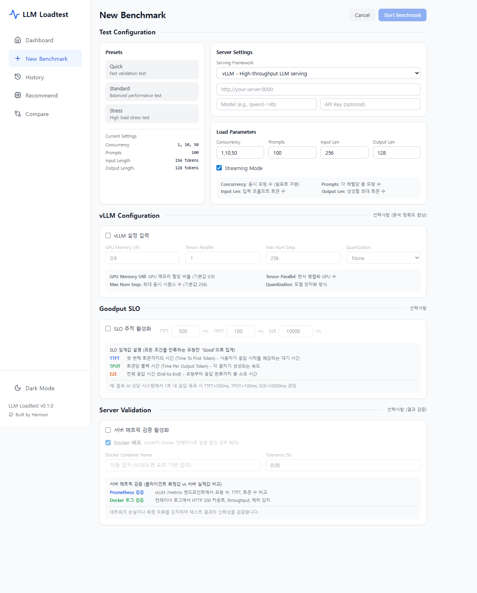
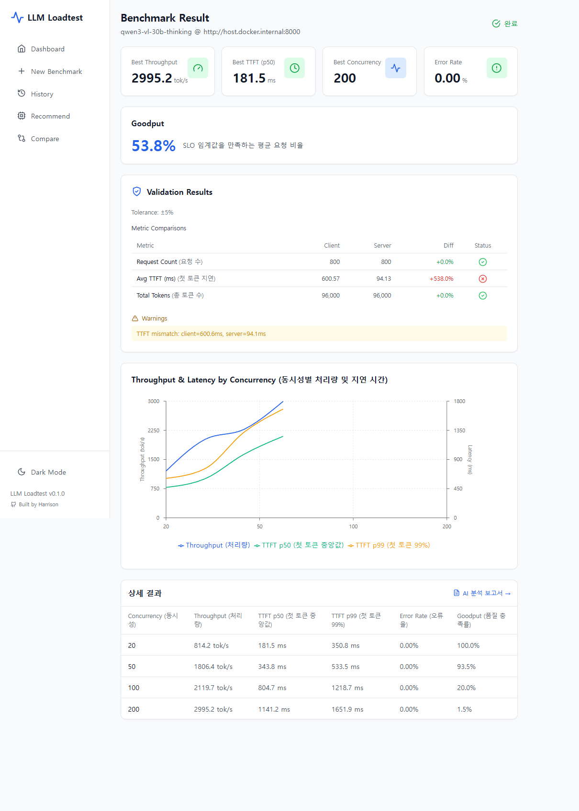
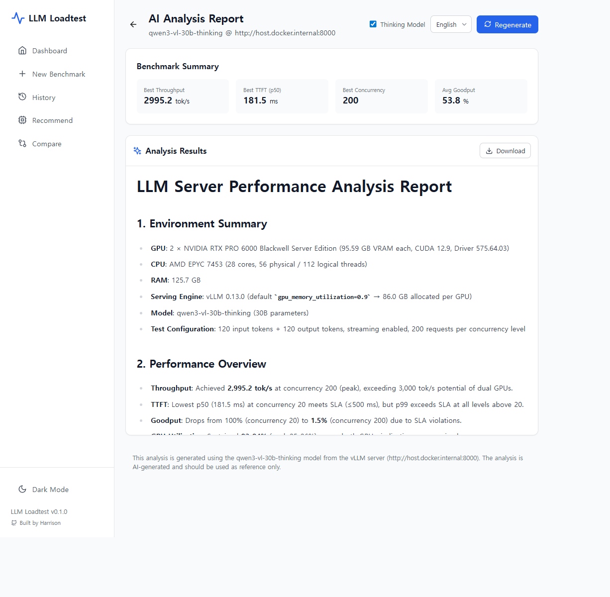

Engineering LLM Loadtester — LLM-Serving Benchmark for Non-Engineers
Overview
A web-based LLM-serving benchmarking tool that lets non-engineers test serving performance directly in their browser.
It started with a question from my boss: "How many concurrent users can our LLM server actually handle?" Performance evaluation kept being assigned to whoever happened to be available, and the knowledge never accumulated. So I proposed and built an internal "LLM LoadTester anyone can use" — including non-developers.
GitHub Stars 2 · MVP shipped in a weekend with the WIGTN-Coding plugin, then iterated.
Highlights
- Cold outreach received from an ex-Google ML/AI engineer (NextToken builder)
- Dual cross-validation system — Prometheus ±5% + Docker ±10%
- Single-interface coverage via Adapter Pattern — vLLM · SGLang · Ollama · Triton
- GitHub Actions CI — 118 tests
- MVP shipped in a weekend with the WIGTN-Coding plugin
Links
- GitHub: Hyeongseob91/engineering-llm-loadtester
- Build log: LinkedIn — AI-Native project build retro
External Response
An ex-Google ML/AI engineer (NextToken builder) sent a cold outreach email after finding the engineering-llm-loadtester repo on my GitHub profile, calling it "quite relevant." We later built an interactive app on top and exchanged feedback.
Why I Built It
Background
Infrastructure performance testing was effectively limited to specific engineers. Evaluating LLM serving meant working with CLI tools (llmperf, vLLM benchmark, etc.), which left sales, MLOps, and PM teams unable to do it themselves.
Approach
Build an iterative test environment fully tunable from the UI. Inputs (target server, traffic load, prompts, SLO thresholds) flexible; outputs (TTFT, TPOT, p99, Goodput) data-driven and crisp. The charm of "fast build" — challenging it yourself without going through anyone.
Core Features
LLM-specific metrics
- TTFT (Time To First Token) — latency until the first token
- TPOT (Time Per Output Token) — time per generated token
- Goodput — SLO-based effective throughput: "share of requests with TTFT ≤ 500 ms and TPOT ≤ 50 ms"
- E2E Latency / ITL / Throughput — accurate token counts via tiktoken
Real-time monitoring
WebSocket-driven progress + pynvml GPU metrics (VRAM, temperature, utilization) collected live.
AI analysis report
Auto-analyzes benchmark results via the Claude API. Identifies bottlenecks and recommends an optimal GPU footprint (required GPUs = ceil(target concurrency / current peak concurrency) × (1 + headroom)).
Validation loop
- Prometheus metric validation — cross-check measured values within ±5%
- Docker log validation — re-validate at the container level within ±10%
- Adapter Pattern: single interface for OpenAI-compatible servers — vLLM · SGLang · Ollama · Triton
Service Flow
1. Dashboard — current benchmarks and history

2. New benchmark — configure and run
3. Result — metric charts and Goodput analysis
4. AI analysis report (auto-generated)Tech Stack
Backend
- API: Python 3.12, FastAPI, asyncio
- CLI: Typer (usable directly from a terminal)
- GPU monitoring: pynvml
- Validation: Prometheus + Docker dual cross-check
Frontend
- Web: Next.js, React, Recharts (metric visualization)
- Real-time: WebSocket-streamed progress
Infrastructure
- Docker: docker-compose one-click deploy
- CI: GitHub Actions (118 tests)
- AI: Claude API (analysis report generation)